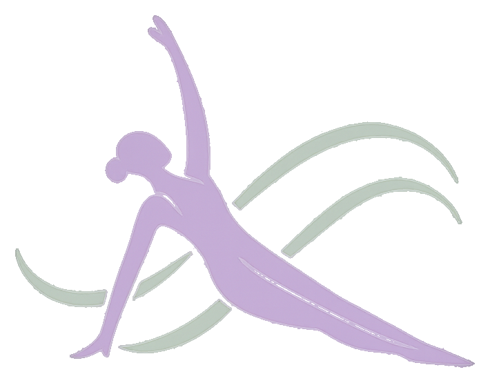

Injuries & Rehab
Supportive programming for knee injuries, lower back pain, scoliosis, rehab needs, and other movement limitations.

Kate PilatesAbout Kate
Kate Pilates is centered on thoughtful instruction, clear cueing, and sessions that meet each client where they are. The work is focused, supportive, and designed to help you build strength you can feel outside the studio.
My Focus
Sessions are shaped around how your body moves now and where you want it to go next: stronger, more supported, and more confident.
Supportive programming for knee injuries, lower back pain, scoliosis, rehab needs, and other movement limitations.
Focused training for active clients and sport-minded movers who want strength, control, mobility, and better body mechanics.
Programs adjusted for dancers, with attention to alignment, fluid movement, back strength, hip control, and balanced flexibility.
Every session is adapted to your body, your goals, your injury history, and what you need that day.
My Bio
I'm a Reformer Pilates instructor with a background in dance and over 16 years of movement experience. I discovered Pilates as a way to support my dance training and quickly fell in love with its focus on strength, control, and body awareness.
I'm certified through Balanced Body, where I trained in reformer, mat, and apparatus. I also completed CoreAlign, TRX, and Springboard trainings with EHS Studio to deepen my knowledge and expand the ways I can support clients in their movement journeys.
Outside the studio, I work as a UX/UI Designer and enjoy blending creativity with structure in both movement and design. My favorite Reformer move is Swan. I love how it strengthens the back, opens the chest, and encourages graceful, fluid movement.
Whether you're new to Pilates or a longtime mover, my goal is to help you feel strong, centered, and confident in your body.
Work With Kate
Start with private attention or bring a partner for a duet. Kate will help you choose the right place to begin.
View Services